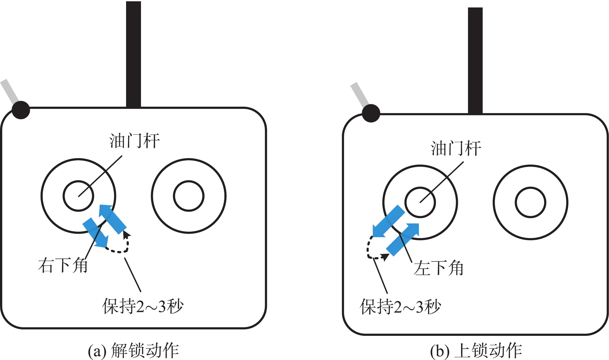

5. 硬件在环仿真器¶
硬件在环仿真器包括一个实时运动仿真软件——CopterSim 和一个三维可视化视景软件——3DDisplay。下面分别对这两个软件进行介绍。
5.1. CopterSim¶
双击桌面的 CopterSim 快捷方式打开 CopterSim。CopterSim的仿真模型和参数与多旋翼软件在环模型相同,因为 CopterSim 是通过 Simulink多旋翼模型代码生成整合而成的。模拟器软件运行在 Windows 64 位计算机平台下，通过USB 数据线与Pixhawk 自驾仪进行串口通信。
图 3.50 Coptersim 的主界面
CopterSim 会发送传感器数据给Pixhawk 自驾仪，然后自驾仪会计算得到的电机 PWM控制信号并返回给 CopterSim。因此 Pixhawk 自驾仪可以实时控制 CopterSim 中的模拟多旋翼，实现和真实飞行同样的效果。与此同时，飞机的姿态与位置信息会以 UDP 协议向本地网络中发送，而 3DDisplay 软件会接收这些信息来完成实时三维视景显示。
CopterSim 程序的主界面分为两大部分，上半部分是读者自定义选择多旋翼模型的输入界面，下半部分是连接自驾仪进行仿真的界面。注意：本软件仅开放了基本功能，还有许多实用的高级功能（如多机仿真、UE4 高逼真场景、固定翼等其他机型仿真等）需要注册之后才能使用，详见 RflySim高级版安装方法 .
直接单击CopterSim 界面中间位置的“模型参数”按钮，就会弹出模型参数配置页面，这里会显示上一次仿真存储的模型参数。该界面主要包含了悬停信息（悬停时间、油门、输出功率、电机转速等）和飞机模型的基本参数（总质量、转动惯量、尺寸、拉力系数和阻力系数等）。
图 3.51 模型参数配置界面
单击 “还原默认参数”按钮，可以将模型参数还原到默认值；单击“存储并使用参数”按钮可以将当前参数存储到数据库中，作为本次和后续硬件在环仿真的参数。 CopterSim 也允许在模型参数配置页面中直接修改模型参数，例如，输入与 Simulink 软件在环仿真的多旋翼模型同样的参数（存储在“e01.SoftwareSimExpsiconInit. m”文件中），然后单击 “存储并使用参数”按钮来存储并使用输入的模型参数。 “噪声水平（0-1）”按钮用于设置传感器仿真噪声水平：“0”是不启用噪声，“1”是噪声水平与实际 Pixhawk 自驾仪传感器噪声一致。当然也可以输入 0 到 1 之间的数或大于 1 的数，来表示仿真传感器噪声与实际噪声的比例关系，以便测试控制算法的抗干扰能力。
当多旋翼配置并且计算完成后，将 Pixhawk 自驾仪插入到计算机的 USB 口上，在主界面的“飞控选择”下拉菜单中就会出现可连接的 Pixhawk 自驾仪串口。选中需要的 Pixhawk自驾仪串口（通常名字中包含字符串“FMU”），单击“开始仿真”按钮，就可以开始硬件在环仿真。CopterSim 可以接收到 Pixhawk 自驾仪回传的消息，说明硬件仿真正常运行。在仿真过程中也可以单击“停止仿真”来停止硬件在环仿真，或者单击“重新仿真”来初始化多旋翼到原始位置。
图 3.52 CopterSim 的硬件在环仿真界面
5.2. 3DDisplay¶
双击桌面的 3DDisplay 快捷方式即可打开 3DDisplay。3DDisplay 主界面界面窗口左侧以 3D 图形的方式展示多旋翼当前的飞行状态；3DDisplay 主界面右上角窗口展示了基本的飞行数据，包括电机转速，位置信息，姿态信息等；3DDisplay 主界面右下角窗口显示多旋翼的飞行轨迹。
图 3.53 3DDisplay 的主界面
5.3. 硬件在环飞行测试¶
在硬件在环仿真中，可以和控制真实飞机一样，通过遥控器仿真的多旋翼完成解锁、起飞、手动飞行、降落等动作。具体步骤如下：
（1）首先将遥控器电源开关推上去，打开遥控器；（2）正确连接 Pixhawk 软/硬件，并通过 CopterSim 开始硬件在环仿真；（3）将遥控器左侧油门摇杆置于右下角，保持 2∼3 秒来解锁Pixhawk自驾仪；图 3.54 通过遥控器解锁与上锁 Pixhawk 自驾仪示意图
（4）此时可以看到 Pixhawk 自驾仪上的 LED 灯变为常亮，且 CopterSim 左下角的消息框收到“Detect Px4 Armed"消息，说明解锁成功。若解锁不成功，则断开所有软/硬件连接，重复上述步骤；注解
高版本 Pixhawk 硬件（例如 Pixhawk2/3/4/5)开始不自带 LED 灯模块，需要使用外置LED 灯观察效果。
（5）向上拨动遥控器左侧的操纵杆，使多旋翼起飞到一定高度，然后上下拨动油门杆，确认多旋翼的上下运动控制功能；（6）左右拨动遥控器左侧的操纵杆，确认多旋翼的偏航方向转动控制功能；（7）上下拨动遥控器右侧操纵杆，控制多旋翼俯仰角的大小，确认多旋翼的前后运动控制功能；（8）左右拨动遥控器右侧操纵杆，控制多旋翼的滚转角的大小，确认实现多旋翼的左右运动功能；（9）拨动遥控器右上角的三段开关，确认多旋翼的控制模式切换功能；（10）向下拨动遥控器左侧的油门摇杆，使多旋翼降落在地面；（11）将遥控器左侧油门摇杆置于左下角，保持 2∼3 秒来锁定Pixhawk 自驾仪；（12）在 CopterSim 中单击“结束仿真”按钮，退出 硬件在环仿真，然后断开 Pixhawk 自驾仪与计算机硬件连接。